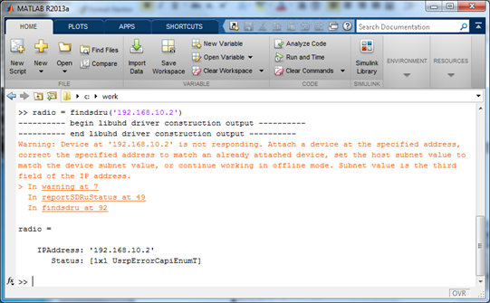

The function findsdru(IPAddress), where IPAddress is the IP address of a USRP® radio, returns the following warning message:
Warning: Device at ‘192.168.10.2' is not responding. Attach a device at the specified address, correct the specified address to match an already attached device, set the host subnet value to match the device subnet value, or continue working in offline mode. Subnet value is the third field of the IP address.

You will get this error if you issue the findsdru function without providing input.
This warning indicates that your subnet configuration is incorrect. For example, if the USRP® radio has an IP address of 192.168.10.2, but the host IP address is on another subnet and has an IP address of 192.168.X.1, where X is a number other than 10.
Correct the host IP address so that it matches the subnet value of the USRP® radio as described in Configure Host Computer .
Alternatively, there may be an Ethernet connection problem between the host computer and the USRP® radio. See Check Ethernet Configuration.
| | Troubleshooting |
USRP, UHD, and Ettus Research are trademarks of National Instruments Corp.
© 1984-2013 The MathWorks, Inc.